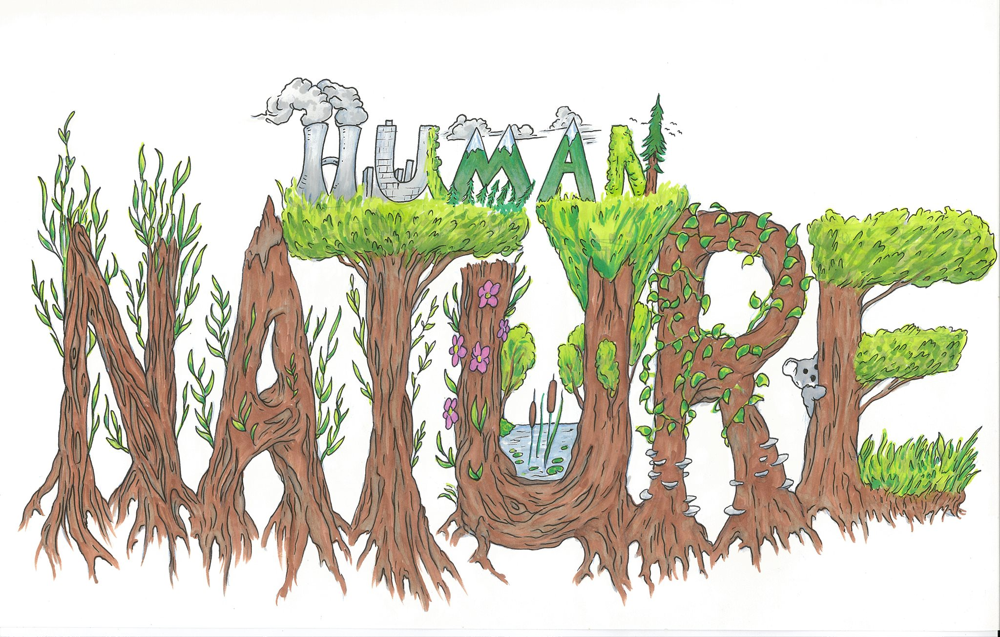

 Huma(N)ature is a dance, theater, and circus production investigating humanity’s relationship to nature - our misguided dominion over it, our inordinate influence upon it, our continued reliance on its systems, and our place within it. Showcasing a variety of artists and shows, Huma(N)ature will be a different experience nearly every night.
The throughline each night will be The Secrets of the Trees, a circus and dance show inspired by the book The Hidden Life of Trees by Peter Wohleben. This theatrical critique of capitalism and greed is told through the trees as they struggle for survival in the Anthropocene*. Originally performed in June 2018 at Athletic Playground in Emeryville, Caitlyn Kilgore and her cast have been excitedly updating this deeply affective, dazzling acrobatic display for its Dance Mission reboot.
Other shows sharing the stage with The Secrets of the Trees vary from musicals to monologues to modern dance. Created and performed by some of the Bay Area’s strongest activists and artist - including members of our local Extinction Rebellion (@XRSFBayArea) - each show will offer something unique, beautiful, and important for the times ahead. Stay tuned for more info about each offering!
*The current, scientifically proposed geologic epoch in which human activities constitute a major impact on all Earth’s ecological processes.
Tickets and more info: dancemissiontheater.org/2020/02/06/march-4-15-humanature/